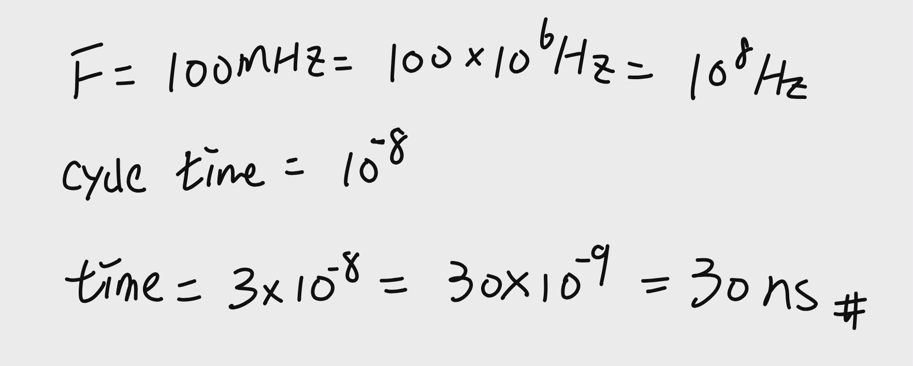
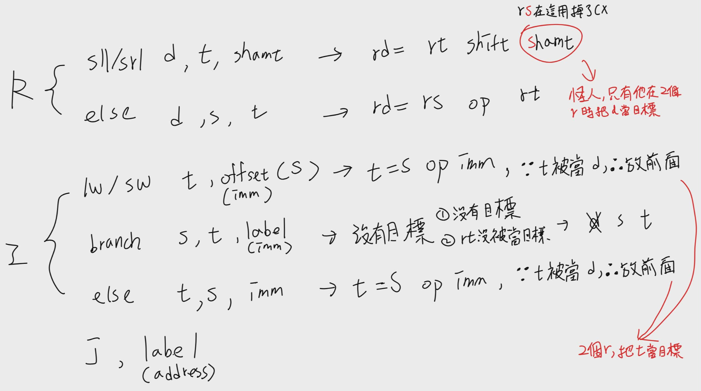
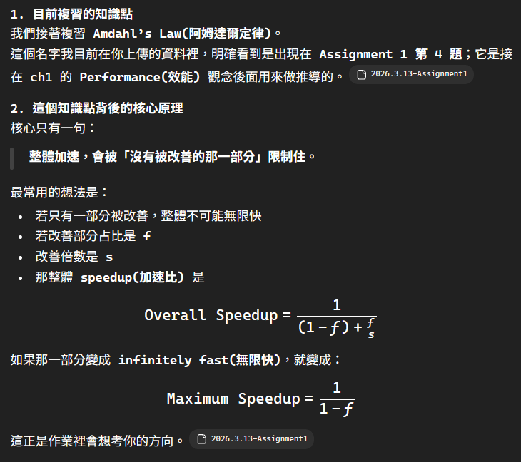
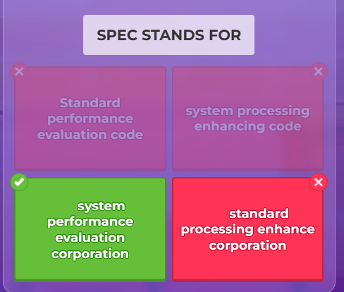

期中考重點整理
1. 題目原文
- The seven great ideas in computer architecture are similar to ideas from other fields. Match the seven ideas from computer architecture,
“Use Abstraction to Simplify Design,”
“Make the Common Case Fast,”
“Performance via Parallelism,”
“Performance via Pipelining,”
“Performance via Prediction”
“Hierarchy of Memories,” and
“Dependability via Redundancy”
to the following ideas from other fields:
a. Assembly lines in automobile manufacturing
b. Suspension bridge cables
c. Aircraft and marine navigation systems that incorporate wind information
d. Express elevators in buildings
e. Library reserve desk
f. Increasing the gate area on a CMOS transistor to decrease its switching time
g. Building self-driving cars whose control systems partially rely on existing sensor systems already installed into the base vehicle, such as lane departure systems and smart cruise control systems.
2. 依序講解
a.
答案英文(配對組合)：Performance via Pipelining ↔ Assembly lines in automobile manufacturing 答案中文(配對組合)：以管線化提升效能 ↔ 汽車製造裝配線
一小段講解： 裝配線會把造車流程拆成很多 stage(階段)，不同車子同時在不同階段前進。這跟 pipelining(管線化) 很像：不是把單一工作本身變短，而是讓多個工作重疊進行，提升整體 throughput(吞吐量)。這組配對是非常常見的標準答案。(quizlet.com)
b.
答案英文(配對組合)：Dependability via Redundancy ↔ Suspension bridge cables 答案中文(配對組合)：以冗餘提升可靠度 ↔ 吊橋纜索
一小段講解： 吊橋不會只靠單一纜索撐住，而是很多纜索一起分擔力量。就算其中一些出問題，整體仍能維持。這就是 redundancy(冗餘) 的核心精神：多放備援，換取系統更穩、更可靠。(quizlet.com)
c.
答案英文(配對組合)：Performance via Prediction ↔ Aircraft and marine navigation systems that incorporate wind information 答案中文(配對組合)：以預測提升效能 ↔ 納入風向資訊的航空／航海導航系統
一小段講解： 飛機或船若能先預測風向、風速，就能提早修正航線，而不是偏掉後才補救。這就像 processor 先做 prediction(預測) 一樣：先猜未來大概會發生什麼，猜對就能省時間、少浪費資源。(quizlet.com)
d.
答案英文(配對組合)：Make the Common Case Fast ↔ Express elevators in buildings 答案中文(配對組合)：讓常見情況變快 ↔ 大樓中的直達電梯
一小段講解： 直達電梯不是平均服務每一層，而是特別去加速最常見、最值得優化的移動需求，例如大量人要快速到高樓層。這正是 make the common case fast(讓常見情況變快)：不是每種情況都平均處理，而是優先讓最常發生的情況更快。你課堂檔案也把它描述成針對高頻率出現的運算做最佳化。
e.
答案英文(配對組合)：Hierarchy of Memories ↔ Library reserve desk 答案中文(配對組合)：記憶體階層 ↔ 圖書館保留書櫃台
一小段講解： 圖書館會把最常被借、最急著用的書放在更容易拿到的位置，其他書再放到一般書架或庫房。這和 hierarchy of memories(記憶體階層) 一模一樣：常用資料放在更快、更近但容量較小的地方，不常用資料放在較慢但容量較大的地方。(quizlet.com)
f.
答案英文(配對組合)：Performance via Parallelism ↔ Increasing the gate area on a CMOS transistor to decrease its switching time 答案中文(配對組合)：以平行化提升效能 ↔ 增加 CMOS 電晶體閘極面積以降低切換時間
一小段講解： 既然你要把 F 配到 Parallelism，我們就照這個版本重寫。這種解法在部分網路解答中確實存在，且有來源直接把 f 配成 Performance via Parallelism。可把它理解成：增加可同時承擔、推動的電流能力，讓更多動作能更有效率地一起發生，對應到「用更多硬體同時做事」的 parallelism(平行化) 思想。不過這一組在不同版本答案中爭議最大，你若是要交作業，最好以老師上課版本為準。(Gauth)
g.
答案英文(配對組合)：Use Abstraction to Simplify Design ↔ Building self-driving cars whose control systems partially rely on existing sensor systems already installed into the base vehicle 答案中文(配對組合)：用抽象化簡化設計 ↔ 自駕車控制系統部分依賴車上既有感測系統
一小段講解： 自駕系統不是每一個底層感測功能都自己從零重做，而是建立在既有的 lane departure(車道偏移警示)、smart cruise control(智慧巡航) 等模組之上。這就是 abstraction(抽象化)：直接使用下層已經存在的功能介面，而不用反覆處理所有底層細節。你的課堂檔案也明確把 abstraction 定義成「隱藏較低級別的詳細資訊，幫助處理複雜性」。
3. 這版整理成最終配對表
- a → Performance via Pipelining
- b → Dependability via Redundancy
- c → Performance via Prediction
- d → Make the Common Case Fast
- e → Hierarchy of Memories
- f → Performance via Parallelism
- g → Use Abstraction to Simplify Design
4. 若你要直接抄成精簡版
a. Performance via Pipelining b. Dependability via Redundancy c. Performance via Prediction d. Make the Common Case Fast e. Hierarchy of Memories f. Performance via Parallelism g. Use Abstraction to Simplify Design
你若要，我下一則可以再幫你改成「老師看了最順眼的作答版」，也就是每題只留 1 句、適合直接手寫上去的版本。
單位
| 英文前綴 | 符號 | 次方 | 中文 | 念作 |
|---|---|---|---|---|
| peta | P | 10^15 | 拍 | 拍它 |
| tera | T | 10^12 | 兆 | 泰拉 |
| giga | G | 10^9 | 十億(吉) | 吉咖 |
| mega | M | 10^6 | 百萬 | 美加 |
| kilo | k | 10^3 | 千 | 基洛 |
| X | X | 1 | X | X |
| milli | m | 10^-3 | 毫 | 米利 |
| micro | µ | 10^-6 | 微 | 麥可／麥克羅 |
| nano | n | 10^-9 | 奈 | 奈諾 |
| pico | p | 10^-12 | 皮 | 皮可 |
Clock frequency / clock cycle
Wrong Question 1
Question: If a processor has a clock frequency of 100 MHz and one instruction needs 3 clock cycles, how long does that instruction take to execute?
(A) 0.3 ns (B) 3 ns (C) 30 ns (D) 300 ns
Your answer: A
Correct answer: C

Memory basics
Wrong Question 2
Question: Cache memory is commonly built using:
(A) DRAM (B) SRAM (C) ROM (D) Flash memory
Your answer: D
Correct answer: B
Chache 屬於 DRAM 的一種
CH1 ISA / ABI
Wrong Question 5
Question: According to the chapter, ABI is best understood as:
(A) Only the cache design of a processor (B) Only the motherboard wiring standard (C) The combination of the basic instruction set and the operating-system-related interface used by programmers (D) A graphics driver only
Your answer: B
Correct answer: C
ABI = ISA + operating-system-related binary interface
ROM
ROM 是 Read-Only Memory（唯讀記憶體）。
你可以先把它抓成一句話：ROM 是用來放「不希望斷電就消失、而且平常不常改動」內容的記憶體。最典型就是 firmware（韌體），像開機時需要先跑的 BIOS／UEFI 類程式。你的課件也把 ROM 定義成「斷電後資料不會消失」，並舉 BIOS 為例。
ISA / ABI / architecture vs implementation
Architecture(架構) 和 implementation(實作) 不一樣。架構是在講「它應該提供什麼功能」，實作是在講「底層硬體到底怎麼做出來」。
三種電腦類型
Personal computers (個人電腦)
Servers (伺服器)
Embedded computers (嵌入式電腦)
| 類型 | 使用對象 | 主要任務 | 最在意的指標 |
|---|---|---|---|
| Personal computers(個人電腦) | 單一使用者 | 文書、上網、娛樂、一般應用 | 價格、互動反應速度、通用性 |
| Servers(伺服器) | 多個使用者 / 多服務 | 提供網站、資料庫、雲端服務 | 吞吐量、可靠性、可用性、擴充性 |
| Embedded computers(嵌入式電腦) | 內建於設備 | 控制特定功能 | 低功耗、低成本、小體積、穩定 |
時間
Response time(反應時間)
一個工作從開始到結束花多久
你自己在等的那個時間
Throughput(處理量)
一段時間內總共做完多少工作
比較像整體產能
效能
If computer A finishes a task in 10 seconds and computer B finishes the same task in 20 seconds, then A is how many times faster than B?
(A) 0.5 times
(B) 1 time
(C) 2 times
(D) 10 times
正確答案是：
(C) 2 times
A 花 10 秒，B 花 20 秒，A 的效能是 B 的兩倍。
組合語言
Q5. Mixed
Assume:
| x -> $s1 y -> $s2 |
|---|
Write MIPS code for:
| if (x \< y) x = 1; else x = 0; |
|---|
ans:
| slt $t0, $s1, $s2 beq $t0, $zero, Else addi $s1, $zero, 1 j Exit Else: addi $s1, $zero, 0 Exit: |
|---|
欄位
op rs rt rd
lw \(t0, 32(\)s3)
rt rs

$at
assembler temporary
保留給 assemblor 的暫存器。
sltu
Q1. Basic
Which instruction compares two registers as unsigned integers?
A. slt
B. slti
C. sltu // ans
D. beq
為何 16 進位是 0x
因為 x 是指 16 進位，前面打 0 只是習慣，像是 0b(二進位)、0o(八進位)
正負數轉換
「取反，加1」
11111111 11111111 11111111 11111100
=
00000000 00000000 00000000 00000011 + 1
=
00000000 00000000 00000000 00000100 -> -4
加 1 是對正數加一
也就是 -(3+1) = -4，不是 -3 + 1 = -2
overflow
Does this 8-bit signed two's complement addition overflow?
0111 1111
+0000 0001
A. Yes
B. No
ans:A，因為 MSB 是負數
記下位置的指令
1. Branch 的計算公式
target = PC + 4 + (sign_extend(offset) \<\< 2)
也常寫成：
target = PC + 4 + offset × 4
這裡的 offset 是指令裡 16-bit 的 branch immediate。它存的是相對位移，不是完整位址。
2. Jump 的計算公式
target = { (PC + 4)[31:28], instr_index[25:0], 00 }
也可寫成位元運算版：
target = ((PC + 4) & 0xF0000000) | (instr_index \<\< 2)
這裡的 instr_index 是 j 指令裡的 26-bit address 欄位。它存的是目標位址去掉最低兩位後的值，執行時再左移 2 位，並接上 PC+4 的高 4 bit。
Amdahl’s Law(阿姆達爾定律)

機器碼轉組合語言
Q5. Mixed
What is the decoding procedure for machine code → assembly?
Choose the best order.
A. Decode register names first → choose instruction type → cut fields
B. Convert to binary → determine instruction type from op → split fields → map numbers back to names
C. Read rd first → decide if it is I-type → then find op
D. Look at shamt first for every instruction
因為機器碼是 16 進位，要先轉為 2 進位，然後再看 op、再切欄位、再解回組合語言。
SPEC

GPT 整理
- 快速定位：這次你最該先背什麼
如果你現在是要「短時間快速複習」，我建議優先順序是：
- 效能 (Performance)：因為 ch1、作業、Kahoot 都反覆出現，還牽涉到 clock rate、clock cycle、CPI、execution time、relative speed。
- 記憶體階層 (Memory Hierarchy)：register、cache、DRAM、ROM、flash 的角色與差異很常考。
- MIPS / ISA / 指令格式：instruction set、R/I/J 型、register、load/store、branch、slt/slti、shamt 幾乎是 ch2 核心。
- CPU 基本組成與機器週期：control unit、ALU、register、PC、cache、fetch/decode/execute/store。
- CISC vs RISC：Kahoot 與 ch2 都有，且非常容易混。
- 核心觀念地圖
flowchart TB
A[Computer Organization<br>計算機結構] --> B[CPU]
A --> C[Memory]
A --> D[ISA / MIPS]
A --> E[Performance]
B --> B1[Control Unit]
B --> B2[ALU]
B --> B3[Registers]
B --> B4[Machine Cycle<br>Fetch Decode Execute Store]
C --> C1[Register]
C --> C2[Cache SRAM]
C --> C3[Main Memory DRAM]
C --> C4[ROM / Flash]
D --> D1[Instruction Set]
D --> D2[R I J Formats]
D --> D3[Load Store Branch]
D --> D4[Signed / Unsigned]
E --> E1[Execution Time]
E --> E2[Clock Rate / Clock Cycle]
E --> E3[CPI / IC]
E --> E4[Relative Performance]- 一頁看懂所有核心重點
3.1 CPU 與基本執行流程
CPU 的核心角色可以拆成：
Control Unit(控制單元) 負責解碼、發命令；
ALU(Arithmetic Logic Unit，算術邏輯單元) 負責算術與邏輯運算；
Registers(暫存器) 負責放目前最常用、最快要取的資料。PC(program counter) 負責指出下一個要執行的指令位址。
一個指令的大流程是：
Fetch(擷取) → Decode(解碼) → Execute(執行) → Store(儲存)。教材也把它拆成「指令週期 = 擷取 + 解碼；執行週期 = 執行 + 儲存」。
你可以把它想成餐廳出餐流程：
先拿單（fetch）→ 看懂單（decode）→ 做菜（execute）→ 送餐（store）。
3.2 記憶體階層一定要會
最重要的觀念不是背名字，而是背「越靠近 CPU 越快、越小、越貴」。
從快到慢大致可想成：
Register → Cache(L1/L2/L3) → Main Memory(DRAM) → Secondary Storage
教材明確指出：cache 通常用 SRAM，主記憶體通常是 DRAM；SRAM 比 DRAM 快，但更貴、容量更小。
你至少要穩背這幾個：
- RAM：揮發性，關機資料消失。
- DRAM：主記憶體，要持續充電更新。
- SRAM：常拿來做 cache，不需像 DRAM 那樣持續更新，速度快、成本高。
- ROM：唯讀、非揮發性，常放 BIOS。
- Flash memory：非揮發性，常見於手機、隨身碟、記憶卡。
3.3 Instruction Set / ISA 是什麼
Instruction Set(指令集) 就是電腦能聽懂的全部指令集合。Kahoot 也直接考了這個定義。
ISA (Instruction Set Architecture，指令集架構) 是硬體和 low-level software(低階軟體) 之間的介面。它定義了機器語言程式要知道的規則：有什麼指令、怎麼用暫存器、如何存取記憶體。
一句話記：
ISA 是規則；implementation(實作) 是怎麼把規則真的做成硬體。
3.4 MIPS 的核心精神
這章最核心不是背很多指令，而是理解 MIPS 為什麼長這樣：
- Simplicity favors regularity：規律性讓硬體更簡單。
- Smaller is faster：越小越快，所以 register 不會無限制增加。
- Good design demands good compromises：設計要取捨。
- Make the common case fast：常見情況要特別優化，例如 immediate。
3.5 CISC vs RISC
這題超常混。
CISC
- 指令多
- 常有較多 addressing modes(定址模式)
- 指令可變長
- 硬體較複雜
- 想法是：用較少條指令做比較複雜的事。
RISC
- 指令少
- 通常固定長
- 常見 register-to-register
- 每條指令盡量簡單，利於 pipeline 與高速實作
- 想法是：把複雜工作拆成較多條簡單指令。
你可以這樣背：
- CISC = 複雜靠硬體
- RISC = 簡單靠軟體
3.6 Register 與 Memory 的關係
MIPS 很重視 register。原因很單純：
register 比 memory 快、也更省能。 所以編譯器會盡量把常用變數放在 register，不夠才 spill(溢出) 到 memory。
重點：
- MIPS 常見有 32 個通用暫存器。
$t常當 temporary；$s常當 saved。$zero永遠是 0。$at保留給 assembler 使用，Kahoot 有考。
3.7 MIPS 指令格式：R / I / J
這裡是 ch2 最硬的主軸。
R-type
用在 register 間運算，例如 add, sub, and, or, slt, sll, srl。格式：
op rs rt rd shamt funct
重點欄位：
rs：來源暫存器 1rt：來源暫存器 2rd：目的暫存器shamt：位移量funct：功能碼
I-type
用在 immediate、load/store、branch。格式：
op rs rt immediate/address
J-type
用在 jump。格式：
op address
3.8 最常見 MIPS 指令族
算術
add rd, rs, rtsub rd, rs, rtaddi rt, rs, imm
addi 的存在就是教材說的 make the common case fast：常數很常用，直接放進指令更快，不用先從記憶體載入。
資料轉移
lw rt, offset(rs)：load wordsw rt, offset(rs)：store word
這是 register ↔ memory 的橋樑。MIPS 是 load/store 架構，真正算術通常還是在 register 做。
邏輯
andornorsllsrl
其中 shamt 就是 shift amount(位移量)，Kahoot 也考過。
條件判斷 / 分支
beqbnesltsltisltusltiu
slt / slti 是高頻題：
差別不是 signed/unsigned，而是有沒有 immediate。
slt：跟 register 比slti：跟立即值比
Kahoot 也直接考了。
3.9 Signed / Unsigned 一定要分清楚
教材強調：
- 有號整數常用 two’s complement(2 的補數)。
- 比較大小時，有號和無號的意義不同。
例如同一串 bit，當 signed 看可能是負數；當 unsigned 看可能是超大正數。
重點指令：
slt,slti：signedsltu,sltiu：unsigned
3.10 地址、對齊、陣列偏移
這裡很常出計算題。
MIPS 以 byte 為定址單位，但 lw/sw 操作的是 word(4 bytes)。所以：
- 一個 word = 4 bytes
- 連續 word 位址差 4
- word 對齊通常在 4 的倍數位址開始。
所以陣列位移公式很重要：
A[i] 的位移 = i × 4（假設每個元素是 1 word）
例如 A[8] 的 offset = 8 × 4 = 32。教材例題就是這樣。
3.11 內儲程式 (Stored-program concept)
這個概念非常根本：
- 程式和資料都存在記憶體裡
- CPU 依序從記憶體取指令來執行
這就是為什麼「換一個程式，電腦就像變成另一台機器」。
3.12 效能的真正核心
這部分是你最該背公式的地方。
真正可靠的效能量測是時間。 教材明講：execution time 才是最終標準。
要分兩種：
- Response time / Execution time：一個工作做完花多久
- Throughput：單位時間完成多少工作
關係要記：
- 效能 ∝ 1 / 執行時間
- 執行時間越短，效能越好。
- 必背數學公式總整理
4.1 時脈與週期
Clock cycle time = 1 / Clock rate
例如 100 MHz = 100 × 10^6 Hz
所以 clock cycle time = 1 / (100 × 10^6) = 10 ns。教材也給了這個例子。
4.2 CPU time 基本式
CPU time = CPU clock cycles × Clock cycle time
4.3 Clock cycles 與 CPI
CPU clock cycles = Instruction Count × CPI
其中 CPI = cycles per instruction。
4.4 最常用總公式
把上面兩式合起來：
CPU time = Instruction Count × CPI × Clock cycle time
也可寫成：
CPU time = (Instruction Count × CPI) / Clock rate
這是 ch1、Assignment1 最核心的效能公式。
4.5 相對效能
Performance(X) = 1 / Execution time(X)
X 比 Y 快 n 倍：
Performance(X) / Performance(Y) = Execution time(Y) / Execution time(X) = n
4.6 指令吞吐量
若題目問每秒執行多少 instructions：
Instructions per second = Clock rate / CPI
這是 Assignment1 第 6 題很明顯在考的。
4.7 內頻、外頻、倍頻
內頻 = 外頻 × 倍頻係數
4.8 陣列位址 / word offset
若每個元素 1 word = 4 bytes：
位移量 offset = index × 4
有效位址 = base address + offset
4.9 2 的補數取負值
快速求 -x：
所有 bit 反相，再 +1。教材直接強調了這個捷徑。
4.10 Amdahl’s Law
作業有直接點名 Amdahl’s law，所以這個公式建議一起背。
Speedup = 1 / ((1 - p) + p / s)
其中：
p：可被改善的比例s：該部分加速倍數
它的精神是：局部再怎麼加速，整體加速有限。
4.11 功耗相關
教材給的是比例式，不一定要求你代數硬算，但概念要背：
Dynamic energy ∝ (½) × C × V²
Power ∝ (½) × C × V² × f
重點不是常數，而是知道：
- 電壓 V 影響很大，因為是平方
- 頻率 f 越高，功耗也越高
- 最容易考錯、我幫你直接修正的點
5.1 slt 跟 slti
不是 signed vs unsigned。
真正差別是：
slt：比的是 register 與 registerslti：比的是 register 與 immediate
5.2 slt 跟 sltu
這才是 signed vs unsigned：
slt：signedsltu：unsigned
5.3 shamt
shamt = shift amount(位移量)，不是暫存器編號。
5.4 clock speed 單位
常見單位是 GHz，不是 GB、MB。
5.5 cache 在哪裡
cache 是介於 register 和 RAM 之間的快記憶體。Kahoot 也有考。
5.6 nor 不是 XOR
我有幫你抓到教材裡一個容易誤導的地方：某張 R 型指令表把 nor 寫成「異或」，這是錯的。
NOR = NOT OR，不是 XOR。
OR：任一位元有 1 就得 1NOR：OR 完再全部反相XOR：相異為 1，相同為 0
你考試不要被那張表帶走。
5.7 電腦四大基本功能 vs 固定順序
Kahoot 裡有一題把電腦工作順序簡化成某個固定流程，但正式一點的講法其實是：
電腦具備 input、output、processing、storage 四大基本功能，不是所有情境都硬套成唯一順序。這裡你用「四大功能」去答比較穩。
- 考前 2 分鐘速背版
6.1 口訣版
- 效能看時間，不看感覺
- Clock cycle = 1 / Clock rate
- CPU time = IC × CPI × Clock cycle
- 快的是 register，再來 cache，再來 DRAM
- Cache 用 SRAM，主記憶體用 DRAM
- R 型：op rs rt rd shamt funct
- I 型：op rs rt immediate
- J 型：op address
- MIPS 是 load/store 架構
- A[i] 位移 = i × 4
- slt 比 register；slti 比立即值
- slt/slti 是 signed；sltu/sltiu 是 unsigned
- \(zero 永遠 0；\)at 給 assembler
- CISC 複雜靠硬體；RISC 簡單靠軟體
- 2’s complement 取負：反相 + 1
6.2 真的只想背公式時
\[
\text{Clock cycle time}=\frac{1}{\text{Clock rate}}
\]
\[
\text{CPU clock cycles}=\text{Instruction Count} \times \text{CPI}
\]
\[
\text{CPU time}=\text{CPU clock cycles} \times \text{Clock cycle time}
\]
\[
\text{CPU time}=\text{Instruction Count} \times \text{CPI} \times \text{Clock cycle time}
\]
\[
\text{CPU time}=\frac{\text{Instruction Count} \times \text{CPI}}{\text{Clock rate}}
\]
\[
\text{Performance}=\frac{1}{\text{Execution time}}
\]
\[
\frac{\text{Performance}_X}{\text{Performance}_Y}=\frac{\text{Execution time}_Y}{\text{Execution time}_X}
\]
\[
\text{Instructions/sec}=\frac{\text{Clock rate}}{\text{CPI}}
\]
\[
\text{內頻}=\text{外頻} \times \text{倍頻係數}
\]
\[
\text{Address}=\text{Base}+\text{Offset}, \quad \text{Offset}=i \times 4
\]
\[
\text{Speedup}=\frac{1}{(1-p)+p/s}
\]
\[
\text{Dynamic energy} \propto \frac12 CV^2
\]
\[
\text{Power} \propto \frac12 CV^2 f
\]
- 我幫你做的結論
這批資料整體看下來，期中前最有投資報酬率的複習主線是：
效能公式 → 記憶體階層 → MIPS 指令格式與常用指令 → signed/unsigned → branch / array offset
因為這幾塊同時被：
- ch0 基礎觀念
- ch1 效能
- ch2 指令
- Assignment1
- Kahoot 錯題
反覆交叉提到。
你要的話，我下一則可以直接幫你再壓成一份 「期中考前最後 10 分鐘 A4 版」，只留最可能考的定義、公式和陷阱。